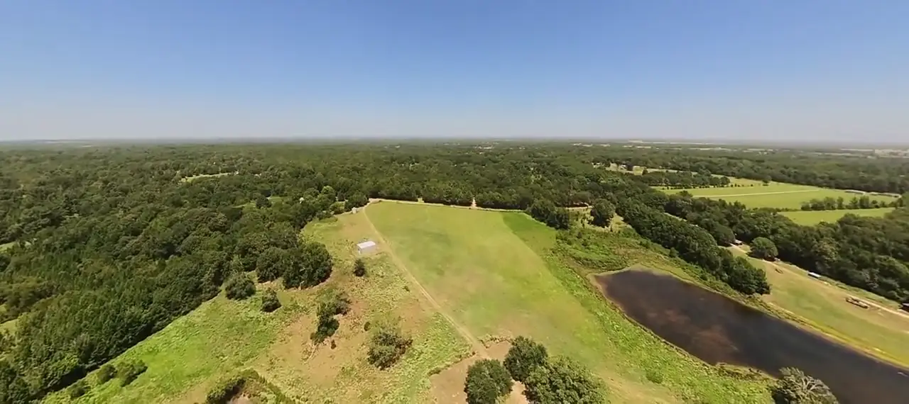
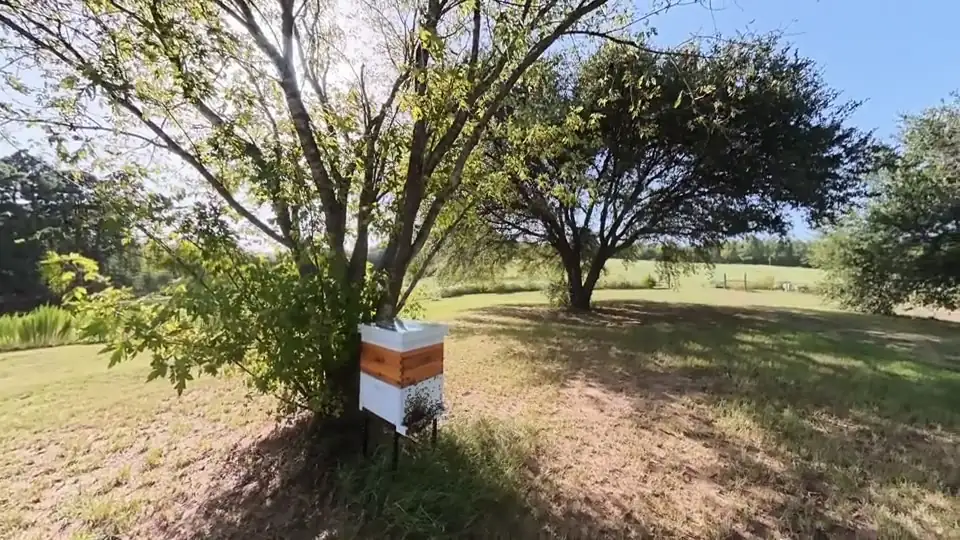
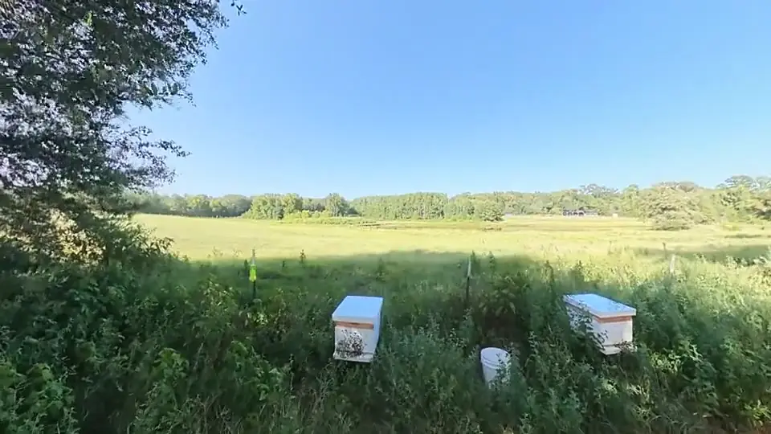
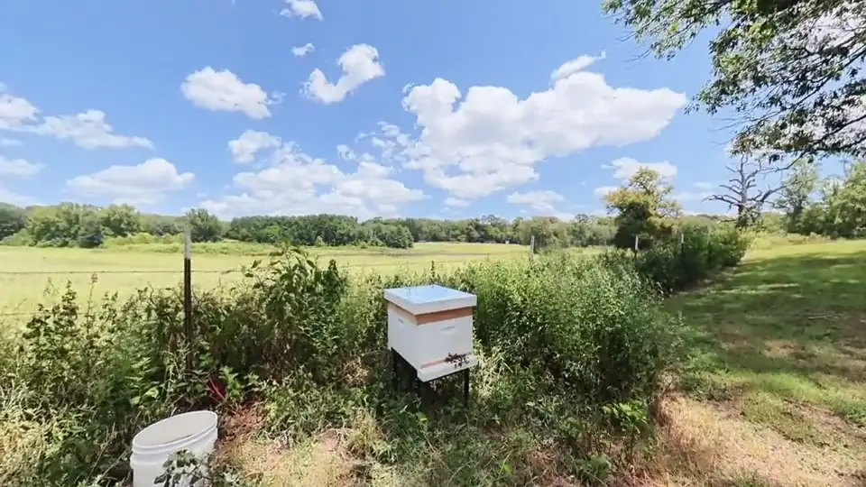
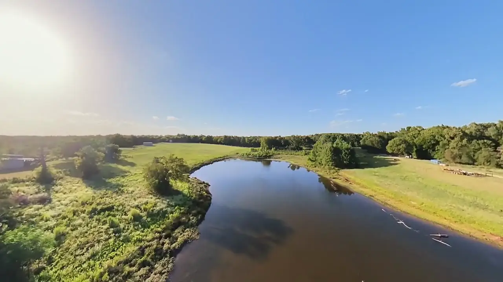
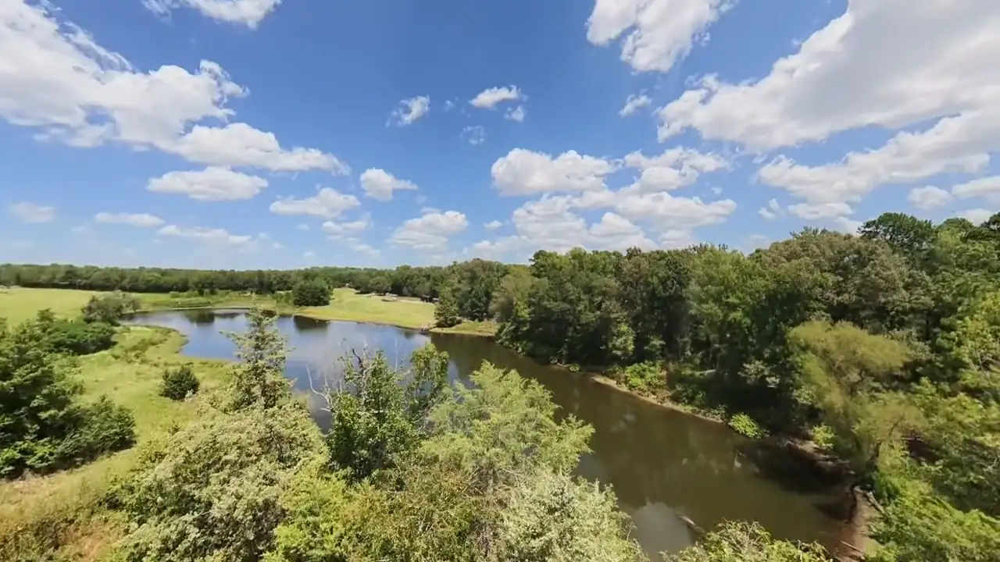

Hogs
Feral hogs root up pasture faster than it grows back. We run corral traps watched by cellular cameras, so the gate drops when the whole sounder is inside and not before. The pasture is recovering.

Winnsboro, Wood County, Texas
Pachamama Valley Farms is a working farm in the pine and oak country of East Texas. Watch the colonies come and go in real time, then scroll down to see the land they forage.
Watch the bee yardThe bee yard camera is coming online soon. Check back shortly.
Late October. Mite treatments are out, the last syrup went on in August, and we're deciding whether to top up stores before winter. Oxalic acid vapor goes in during the broodless window around New Year.
We started the yard this spring with nine colonies in double-deep Langstroth boxes, set along the edges of the big oaks where they catch morning sun and get shade through the worst of the afternoon. East Texas gives them a long season and a hard summer dearth, and we feed through it with 2:1 syrup from four-gallon top feeders.
Varroa mites are what kill hives here, so the calendar is built around them: oxalic acid strips in early June, Apivar in mid-August, a mite wash after every treatment to see whether it worked, and one round of oxalic vapor in the broodless window after Christmas. Small hive beetles get traps in every box.



Bought in 2023 as rough pasture and woods with two ponds and a lot of feral hog damage. The work since has been slow and mostly unglamorous: hog trapping, water, fence lines, and getting the bee yard set up where the forage is.

Feral hogs root up pasture faster than it grows back. We run corral traps watched by cellular cameras, so the gate drops when the whole sounder is inside and not before. The pasture is recovering.
Two ponds hold water year-round and the bees use both. A rural water line to the yard and the cabin is the next big project, so the truck stops hauling tanks.
We leave the fence lines and pond banks wild. Brush, wildflowers and the big oaks feed the bees from early spring, and the less we mow, the more they have.
A metal-roofed cabin with a deep front porch looks out over the pasture. Weekends here start with coffee on that porch and end with the yard going quiet at dusk.
First-year colonies build comb; they don't make surplus honey. Our first real harvest comes off the spring flow, and when it does it will be raw, coarse-strained, and sold in small batches by the jar.
Leave an address if you want to hear when the first jars are ready. One email when it happens, nothing else.
We're a working farm, not a public park, but we like visitors who like bees. If you keep bees in Wood, Franklin or Hopkins County and want to compare notes, or you'd like to see the yard, write to us and we'll find a weekend.
Pachamama Valley Farms LLCWinnsboro, Texasinfo@pachamamavalleyfarms.comyoutube.com/@PachamamaValleyFarms
